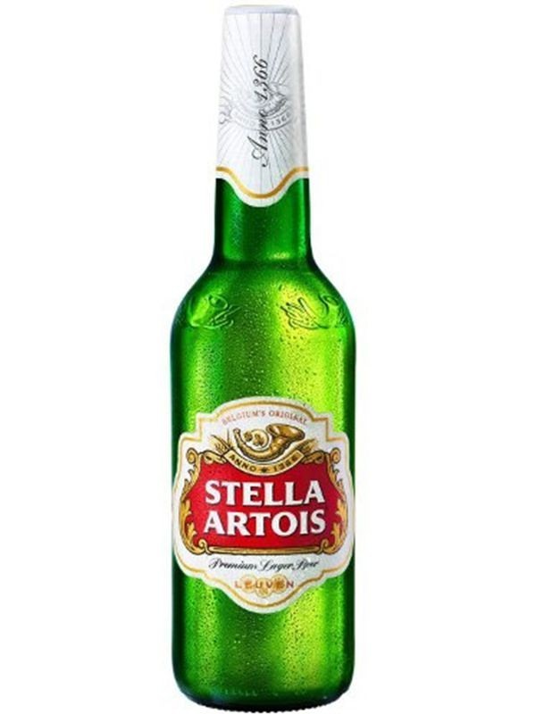

Stella Artois - легке і освіжаюче пиво з приємними квітковими, цитрусовими і горіховими тонами в смаку і ароматі. Одне з найбільш продаваних марок пива, в 2008 році перевищило продажу 100 мільйонів декалітрів! Стелла Артуа застосовує особливу технологію фільтрація спеціально розроблену і запатентовану в університеті міста Леван, концерном InBev.